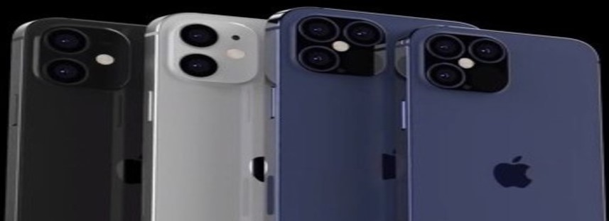

Why people choose iPhones?
You've probably noticed that most successful people choose the iPhone. Whether they are successful businessmen, politicians, Hollywood actors or famous athletes, they prefer Apple smartphones. There is no conspiracy in this, and it is not about money. Let's tell!
About iPhone in general
The iPhone is a smartphone made by Apple that combines a computer, iPod, digital camera and cellular phone
into one device with a touchscreen interface. The iPhone runs the iOS operating system (OS), and as of 2017,
there were 2.2 million apps available for it through the Apple App Store, according to Statista.
Former Apple CEO Steve Jobs introduced the iPhone to the public on January 9, 2007, at the Macworld 2007 conference
in San Francisco.
Major benefits of iPhone
For successful and successful people, the most valuable resource is time. With iPhone, you always know what to expect. When purchasing a new Apple smartphone, users do not need to get used to the new shell or look for the necessary function in a new place. The iOS operating system, receiving improvements from generation to generation, does not cease to retain its logic.
IPhone has one of the lowest defect rates. Apple has managed to establish itself as a manufacturer of quality and reliable devices.Product quality directly affects the stability and reliability of devices, so this is another reason why successful iPhone owners will once again choose Apple smartphones when choosing a new gadget.